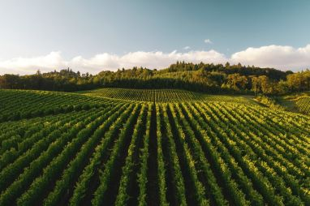

Green Leaf Farms
Our History
Our farm was transformed from a traditional working family farm, To a fun, family-friendly destination that anyone can enjoy!
The farm was first bought by the original family back in 1960.
They started by selling the milk from their cows and the jam from their fields and eventually in 1980 they bought their first horse (Which is the grandparent of the horse we have now!)
The farm and was then converted into what you see now, beautiful walking tours and awesome play parks.

Our Mission
We are here to raise money to stop animal abuse and to help underprivileged farmers to grow their farms.
We hope that you donate some change to help farmers around the UK thrive!